CarmaCars assistants (VAs) in Customer service, Finance, Fleet and Sales. Read chapter 1, then the chapter for your function. If you cover more than one, read each of them.
What you need
The invitation email from CarmaCars (the link works for 24 hours)
A computer for your shift. The portal also works on a phone
An authenticator app on your phone, if your Admin turns on two-step sign-in
Sign in at
carmacars.ca/sign-in?next=/va
You land on To do, the tasks of your function.
Your first sign-in
1
Open the invitation email and press its link within 24 hours. Choose a password of 8 characters or more and press Save the new password.
2
You land in your portal, on To do, working as your main function.
3
At the top of the page, fill in your Home address and Postal code and press Save my home address. You need it before you add a rental or earn a commission. Change it later under Profile, at the top of the menu.
4
Next time, sign in at carmacars.ca/sign-in with your Email and Password, then Sign in.
5
Link expired? Press Send me a new link on the page it opens, or ask an Admin for a password link.
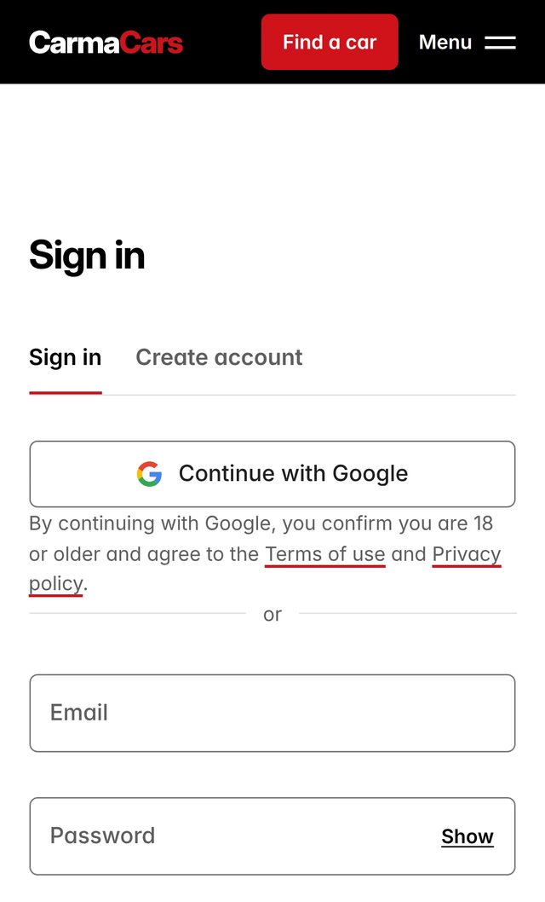
3
Inside
Contents
→Start hereWho this is for and your first sign-in.2
01Your workdayThe menu, To do, task actions, Today, switching functions and your scorecard.6
02Customer serviceRequests and offers, new quotes, renter messages, find a renter, owner forms, late returns.10
03FinancePayments, deposits and refunds, tolls and tickets, reconciliation and Turo trips.17
04FleetField jobs, daily checks, photo reviews, similar cars and listings.22
05SalesRequests and offers, new quotes and owner leads.27
06Add a rental by handChoose the car and dates, find the renter, price it, record how it is paid.30
07CommissionsI sourced this client, your rate, when it is earned, approved and paid.32
08Live visitors and live chatWho is on the site, buying signals, follow-ups, the chat inbox, take over and hand back.34
09Discount game leadsGame leads to call or email, the code they won, whether it is used, and the Sales task.36
10Add-onsAdd-ons in offers and rentals, confirming a chauffeur, Fleet tasks and stock.37
11Shared toolsThe calendar and Find a renter.39
→Quick referenceOne page with the essentials.41
01
Chapter 1
Your workday
Every function works the same way: start on To do, take the oldest task, finish it, and check Today for pickups and returns. The menu keeps your own work first, then the screens of your function in a few groups.
The menu
My work comes first: To do, Today, My scorecard and My sales (customer service and Sales also have Live visitors, Live chat and Game leads). Then the groups of your function. The current group is open; press another to open it. On a phone the whole menu sits behind one Menu button.
Function
Groups and pages
Customer service
Bookings (Requests, New quote, Add a rental, Calendar), Renters (Messages, Find a renter), Cars (Listings, Similar cars), Owners (Owners and enquiries, Add a car for an owner, Owner forms)
Sales
Bookings (Requests and offers, New quote, Add a rental, Calendar), Owners (Owner leads)
Finance
Money (Payments, deposits and refunds, Tolls and tickets, Reconciliation, Turo trips), Renters and bookings (Find a renter, Calendar), Rentals (Add a rental, New quote)
Fleet
Field work (Field jobs, Daily checks, Photo reviews), Cars (Listings, Similar cars, Calendar, Calendar sync, Add a car for an owner), Renters (Find a renter), Rentals (Add a rental, New quote)
To do
Tasks come to your function on their own: new requests, renter replies, failed payments, toll notices and more.
1
The top line shows your function and how many tasks are open.
2
Filter: All, Mine, Unassigned or Waiting; Any time, Overdue, Due today or Escalated; and by type.
3
Each row has a priority, the task, its record, when it is due and how long it has waited. The oldest due is first.
4
Press Take it to make it yours. Sheet opens the step-by-step procedure.
carmacars.ca/va
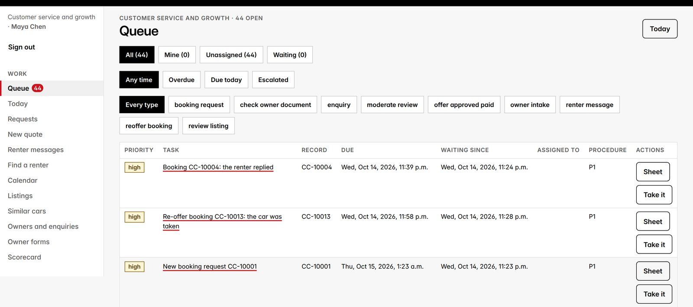
1234
Work a task
Open the task. The buttons along the top move it on.
Button
What it does
Open the working screen
Jumps to the booking, car or owner the task is about.
Done
You finished it. It leaves the queue.
Waiting
You are waiting on someone (a renter, an owner). It stays yours.
Escalate
It needs an Admin. Add why.
Hand over
Give it to someone else on the team.
Add a note
Leave a note for whoever looks next.
Today
1
Today lists pickups and returns, and what is due, for your function.
2
Press a booking number to open it. To do takes you back to your tasks.
carmacars.ca/va/today
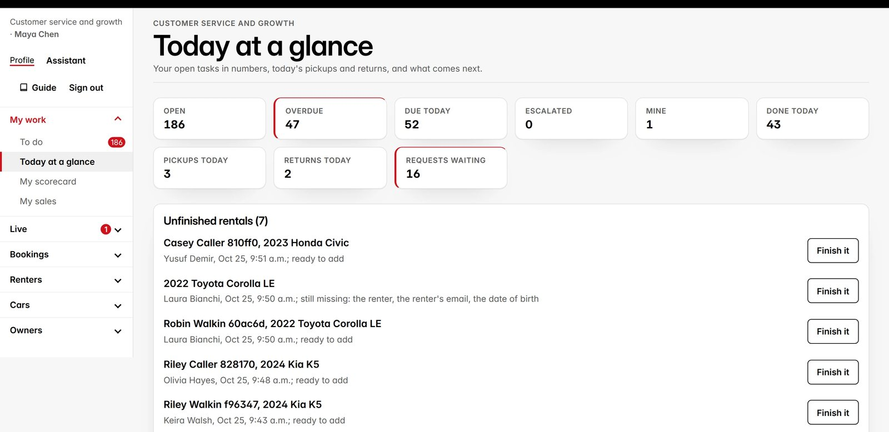
1
Documents to sign
Your staff agreement, when CarmaCars sends it.
1
The queue shows "You have a document to sign". Press Read and sign.
2
Check the key values at the top (your role, hours, rate and start date), then press Read the PDF and read it.
3
Press Sign. Your full legal name is your signature (or press Draw instead). Several documents? One signature covers all of them. The signed copy stays on the same page.
Several functions? Switch with Working as
If you cover more than one function, Working as above the menu lists them: Customer service, Finance, Fleet and Sales. Choose one; the menu, To do and Today change to that function.
Your scorecard
1
Open My work›My scorecard.
2
By week shows each measure, its target and your result for each week.
3
A task meets its target when done by its due time. Daily checks count when done by 9:00 and 18:00.
4
The first reply target is 5 minutes: a new booking request, an enquiry, a change the renter asked for or a renter message is due 5 minutes after it comes in. An Admin sets it in Program settings, and the target column shows the one in force.
carmacars.ca/va/scorecard
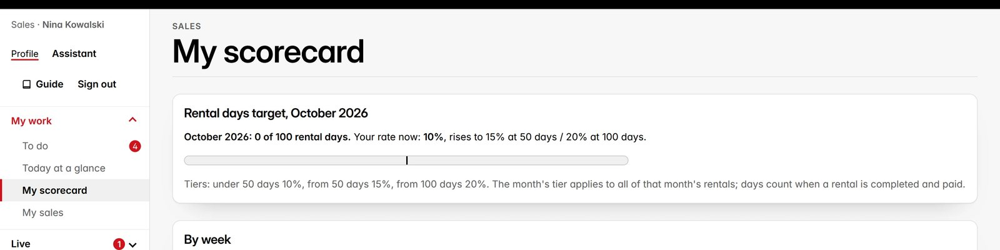
12
02
Chapter 2
Customer service
You answer requests with offers, quote callers, reply to renters, look renters up, and review owner forms. You are often the renter's first person.
Your rail: Queue, Today, Requests, New quote, Renter messages, Find a renter, Calendar, Listings, Similar cars, Owners and enquiries, Owner forms and Scorecard.
Answer a request
1
Open Requests. Filter by New, Waiting on the renter, Pushed back, Offer out or Offer expired.
2
Waiting shows how long the renter has waited. Open the booking number.
carmacars.ca/va/requests
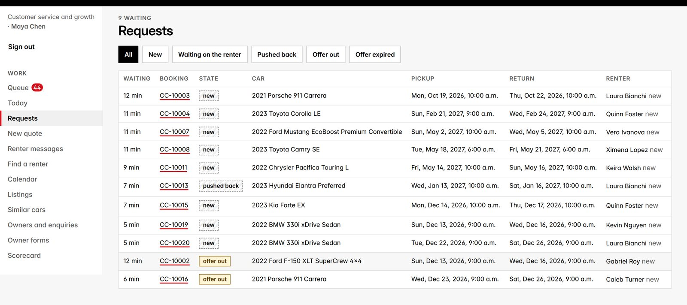
12
3
On the Review tab, check the request: the car is free, the renter, the places.
4
Press Adjust the booking to change the car, dates, places, price or extras, then Save changes.
5
Add a message and press Send the offer. Within your limit you can also use Approve (within my limit) or Approve and send the pay link.
6
Can't do it? Decline with Reason and any alternative. Need to know more? Ask the renter.
carmacars.ca/va/bookings/CC-10056?tab=review
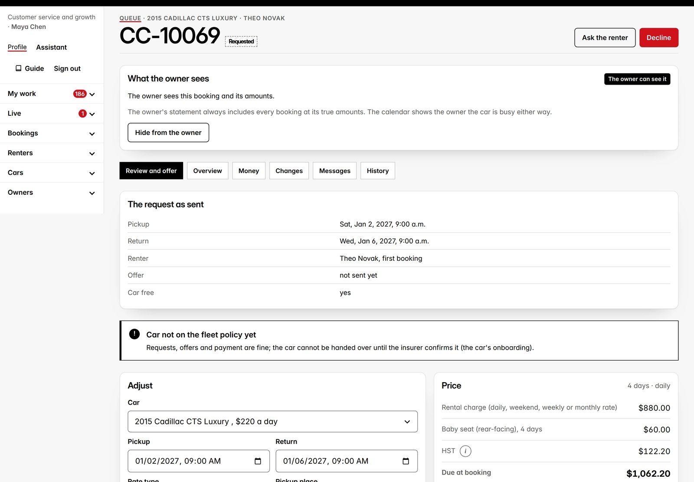
34
An enquiry on an example car
Some cars on the site are marked "Example car": samples that show the kind of cars we rent. A request on one is an enquiry, never a booking.
1
The task Suggest a similar real car comes to To do with the enquiry number (EQ-1001 and up), the car asked for, the dates and the contact.
2
Find a real car of the same kind and price that is free for those dates, and make a New quote for it.
3
Call or email the person with the car and the price, then mark the task done.
New quote for a caller
1
Open New quote. Choose the Car, the Pickup and Return (at least 2 hours from now).
2
Choose how the lead came in, then the caller's Full legal name, Email, Mobile and Date of birth.
3
Set the Licence class and Damage cover, and note places, extras and what they asked.
4
Press Create the request. It opens like any request; send the offer from there.
carmacars.ca/va/quotes/new
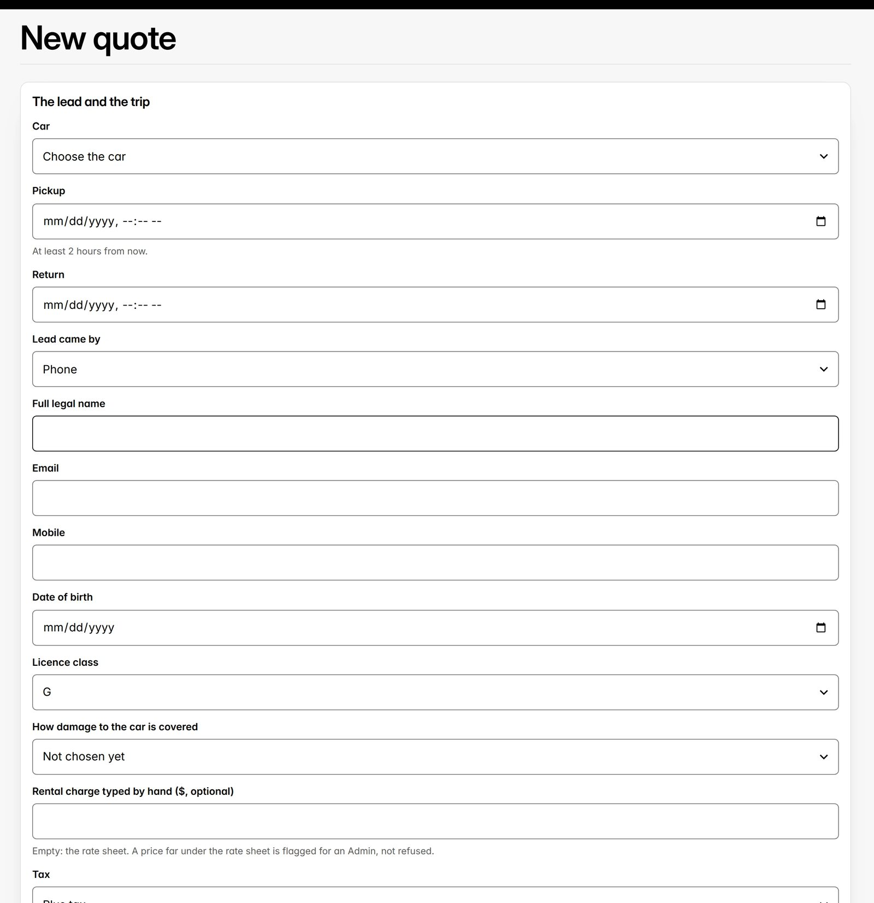
1234
Renter messages and Find a renter
1
Renter messages lists the latest messages with their booking. Open the booking to reply, then press Send.
2
Find a renter: search by name, email, phone or booking number.
3
To open a renter's private details, press Open with a reason. The reason is kept in the access log.
carmacars.ca/va/messages
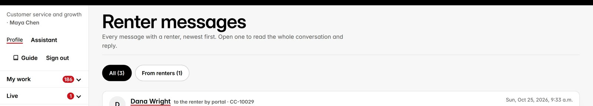
1
Add a car for an owner
Open Owners›Add a car for an owner (fleet: under Cars). You enter everything for the owner; they never fill in the application.
1
The owner: find them by name, email or phone, or choose New owner and enter the name, email, phone and address.
2
The car: type the VIN and press Decode, then the details. Upload the ownership permit, the insurance slip and the lender's information if you have them. Photos are optional.
3
Terms and first invoice: what was agreed with the owner, to the cent. An Admin checks them before anything is sent.
4
Who sourced the owner: Entered for CarmaCars, or I sourced this owner. How the owner signs: by email, or on paper.
5
Press Add the car and send to an Admin. The application waits in the Admin's Applications, marked Entered by staff with your name. When the Admin approves, the owner gets one email to review and sign.
Owner forms (Forms C and D)
1
Open Owner forms. Each row is a scan an owner uploaded, with the witnesses and the status.
2
Press Open to read the scan. Check every page is there and signed, with each witness's signature and name.
3
Press Approve, or Send back with What to fix (the owner reads this).
carmacars.ca/va/owner-forms
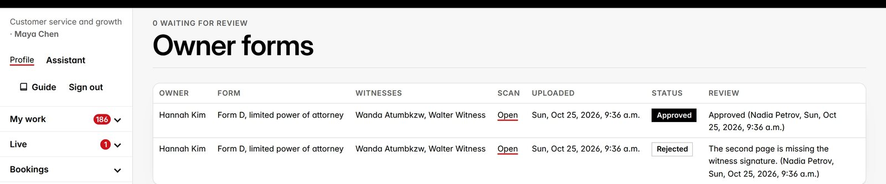
23
A rental agreement signed on paper
1
Open the booking. Under Signed on paper, press Record paper signature.
2
Choose the Rental agreement, or the booking change the renter signed.
3
Check Signed by and Date signed, and upload the scan of every signed page.
4
Press Record signature. It counts as signed, and the renter is not asked to sign again.
A change to a confirmed booking
On a booking's Changes tab you can propose new dates, times or another car, as an Admin does: set the change, write the reason, press Preview the price, then Send to the renter. The renter has 48 hours to accept and sign the amendment. You also send a new signing link to an additional driver from the booking screen.
A late return
A booking past its return time shows the late return panel. Work it in order:
Button
When
Log a call
Record each call to the renter and what they said.
Send T13
The first late notice email.
Send T14 (final notice)
The final notice.
Request disable
Ask an Admin to approve disabling the car.
Open an incident
When the car is not coming back as planned.
03
Chapter 3
Finance
You keep the money right: payments, deposits and refunds, toll notices, processor payouts and Turo trips.
Your rail: Queue, Today, Payments, deposits, refunds, Tolls and tickets, Reconciliation, Turo trips, Find a renter, Calendar and Scorecard.
Your queue
Finance tasks include failed owner debits, toll notices with no match, statements to review and refunds to issue.
carmacars.ca/va
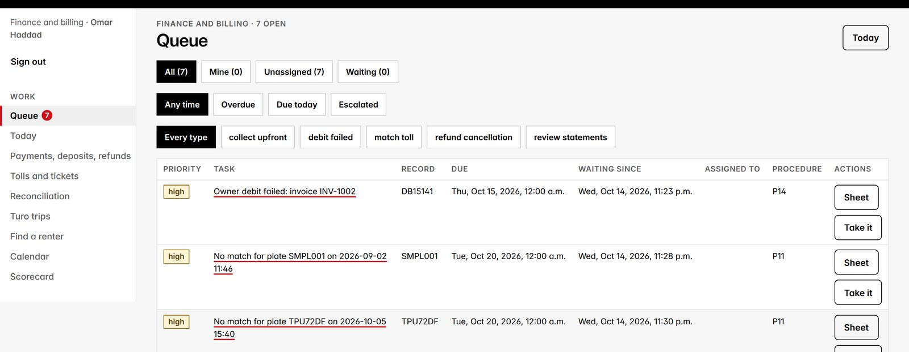
1
The type filters show what Finance handles: collect upfront, debit failed, match toll, refund cancellation and review statements.
Payments, deposits, refunds
1
Failed payments: each with the purpose, amount and the bank's reason.
2
Deposits to take before pickup, and deposits due back.
3
Refunds in progress. Press Request the refund; above your limit it waits for an Admin. Then Issue the refund.
4
Owner invoices that failed, and owner statements to prepare.
carmacars.ca/va/money
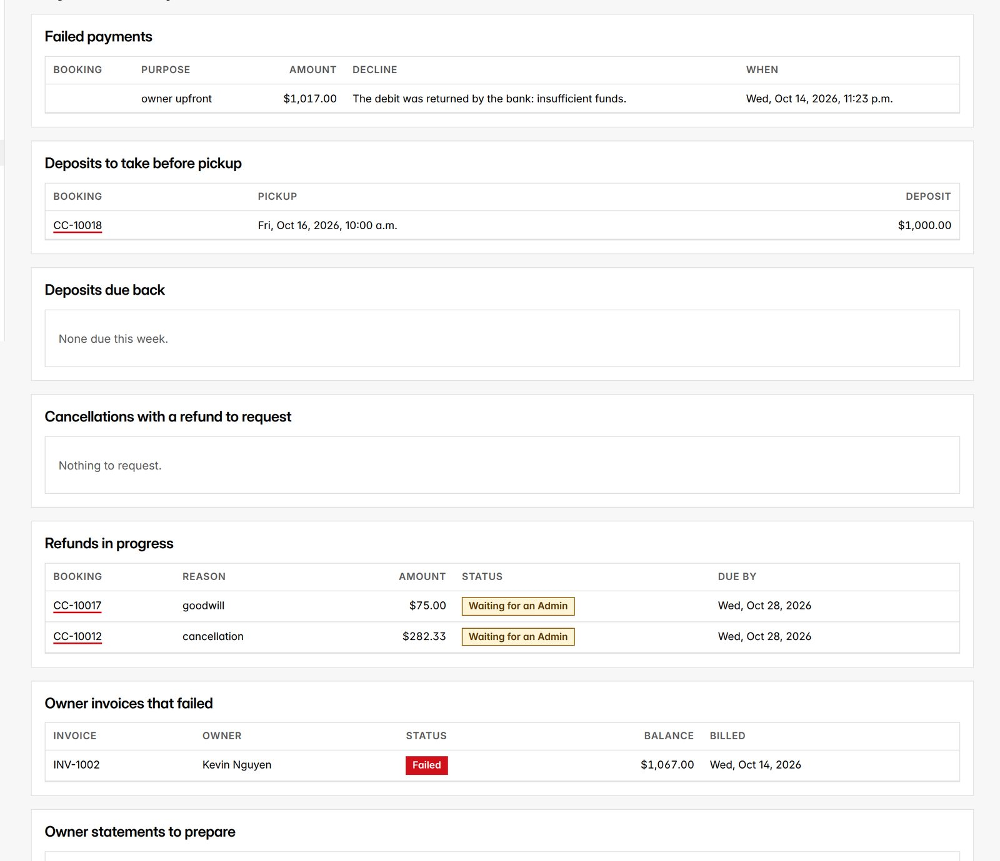
1234
A payment received another way
An owner or renter paid by e-Transfer, cheque, cash or bank transfer.
1
Owner invoice: on Payments, deposits, refunds, find it under Owner invoices owing and press Record payment.
2
Renter: beside the failed payment, press Paid another way. Or open the booking's Money tab and press Record a payment received another way.
3
Choose Paid by, the Date received and the Reference (the cheque number for a cheque). Leave Amount empty for the full balance; type less for a partial payment.
4
Add the proof if you have it (a screenshot or a photo of the cheque), then press Record payment.
The invoice is marked paid or partly paid, the automatic debit stops for that amount and the owner gets a receipt. Above your single limit the payment needs an Admin. Recorded something wrong? Ask an Admin to void it; you cannot void a payment.
Each month's payments recorded by hand are listed under Reconciliation, with the totals by method, to check against the bank.
Read a toll notice
1
Open Tolls and tickets and press Read a notice.
2
Choose the file: a PDF, a photo or a CSV, under 15 MB. Leave the reading profile to find it from the text.
3
Press Read it. Then check each line beside the notice and fix what was read wrong.
4
Press Checked against the notice on each line (Leave out to skip one), then Save as checked and Confirm and import.
carmacars.ca/va/tolls/read
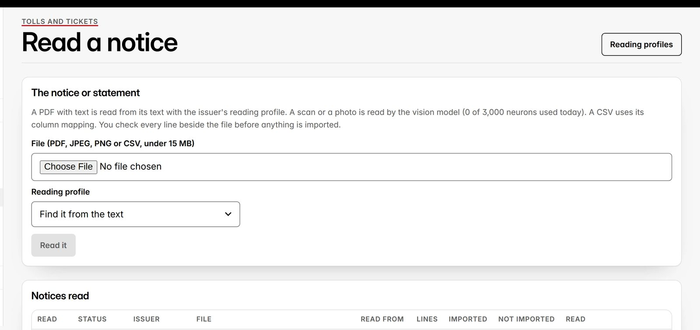
234
carmacars.ca/va/tolls
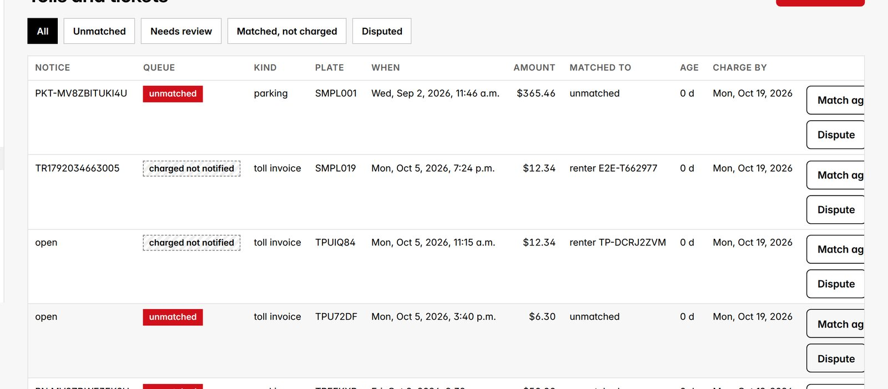
1
The work queue: Unmatched, Needs review, Matched not charged and Disputed, with each notice's plate, date, amount and match.
Reconciliation and Turo trips
1
Reconciliation: press Record a processor payout, then Match it to the payments it contains. Anything still unmatched at the closing check goes to an Admin.
2
Turo trips: press Add a trip for one trip, or paste CSV rows and press Import.
carmacars.ca/va/turo
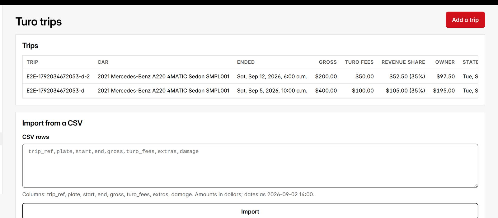
2
04
Chapter 4
Fleet
You keep the cars moving: field jobs, daily checks, photo reviews after returns, and the listing pipeline with its duplicate check and plate covering.
Your rail: Queue, Today, Field jobs, Daily checks, Photo reviews, Calendar, Listings, Similar cars, Find a renter and Scorecard.
Schedule field jobs
1
Handovers and returns without a job are listed first. Every booking needs one.
2
Press Schedule: choose the kind, car, when, place, field staff and instructions.
3
Jobs, next three days: each with its field staff and whether they acknowledged it.
4
Change a job with Assign, Reassign, Move or Cancel.
carmacars.ca/va/fleet
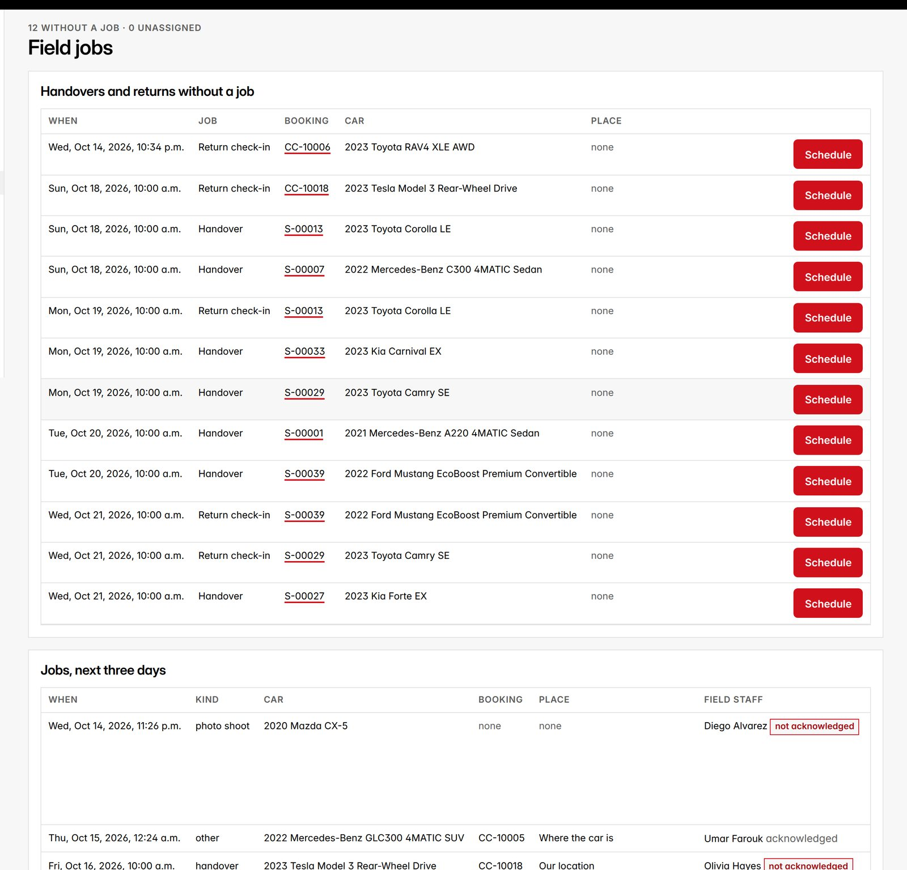
1234
Daily checks
Twice a day: the opening check by 9:00 and the closing check by 18:00.
1
Open Daily checks and choose Opening check or Closing check.
2
Each line shows what was found. Tick OK, or Problem with a note.
3
Press Save the opening check (or Save the closing check). You can save it again.
carmacars.ca/va/checks
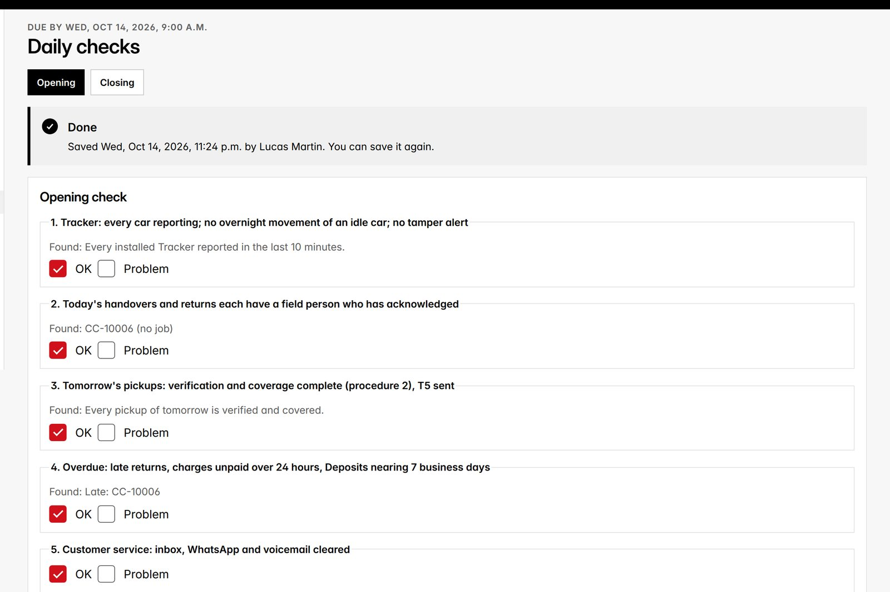
123
Photo reviews after a return
After each return, the field photo set waits under Photo reviews. Compare it with the pickup set. Press Review done, or Ask for a re-shoot if a photo is missing or unclear.
Similar cars
A possible duplicate listing stops publishing until you decide.
1
Each flag shows the car, what it looks like (same VIN, plate, photo or specs) and the other car.
2
Compare the permit, the plate and the photos.
3
Press Not a duplicate with a note when they are different cars, or Same car when they are.
carmacars.ca/va/similar-cars
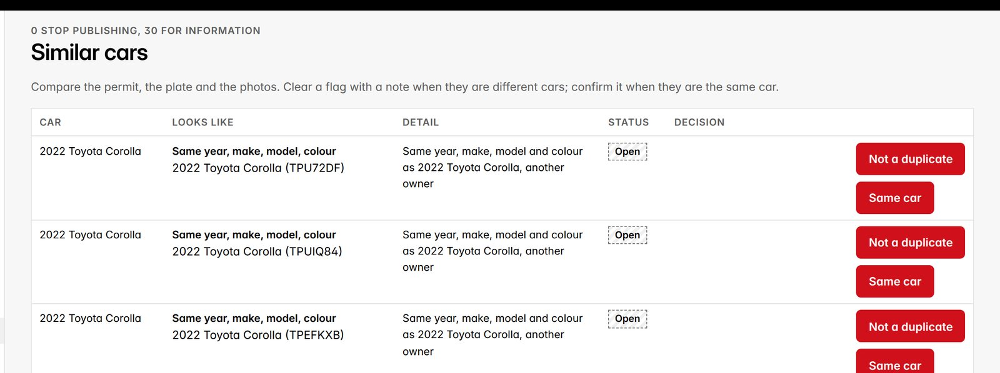
13
Rates and kilometres
From a listing, press The car and its rates, or open the car from Field jobs.
1
Type the rates an Admin set. Only the daily rate is needed; the others follow from it when empty. The weekend rate is a price per day for each day that starts on a Friday or Saturday.
2
Keep Use the defaults for the kilometres, or choose Custom for this car.
3
Check What renters pay under the fields, then press Save the rates. Rates, kilometres and deposit save together.
Listings and covering plates
1
Open Listings. A draft waiting shows Needs review. Open it.
2
The copy is written by itself (change a line only if you must: it is then kept). Check the photos: on each public photo, cover the plate or mark it not visible.
carmacars.ca/va/listings
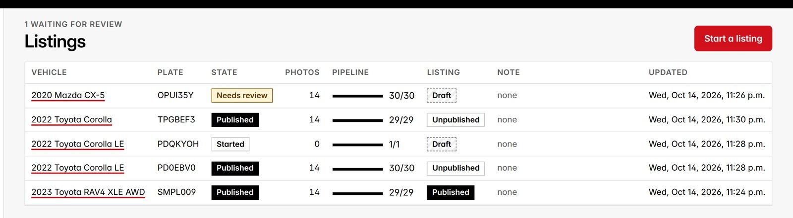
1
3
Press Cover the plate. Check the suggested box; Suggest the plate asks again.
4
Drag over a plate to draw a box; drag a box to move it, its corner to resize it.
5
Choose A CarmaCars plate, Pixelation or Blur, then Save the covered photo.
6
No plate in the shot? No plate visible on this photo.
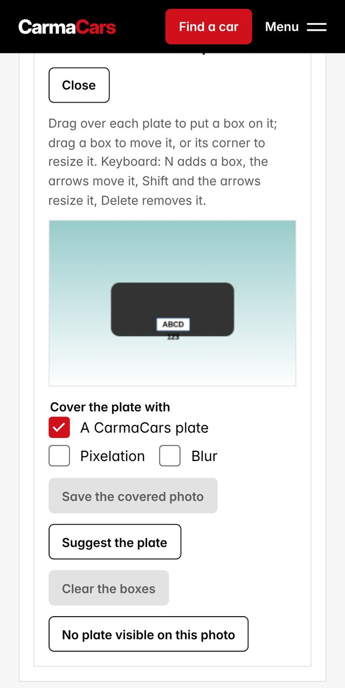
3456
Calendar sync with Turo and other platforms
Cars›Calendar sync: a car listed on Turo or Getaround must never be booked twice.
1
Turo has no calendar link: Turo's trip emails come in by themselves and block the car with the turnaround. For each car on Turo, press This car is on Turo, type its name exactly as Turo's emails show it and press Save.
2
Under "Turo emails to check", an email the reader was not sure about: check the trip on Turo, then Add as a Turo trip (choose the car, check the dates) or Dismiss. A trip whose email did not come: Add a Turo trip on the car.
3
Turo cannot read our calendar: under "Block on Turo", block each CarmaCars booking on the car's Turo calendar, then press Done on Turo. Dates that changed or a booking cancelled here show the dates to free on Turo.
4
Getaround, Google Calendar or another platform with a calendar (iCal) link: open Add a calendar link, choose the platform, paste it and press Add the link. Copy the car's CarmaCars link for that platform with Copy and paste it into the platform's calendar import.
5
A double booking raises an urgent task for you and an email: move, swap or cancel one trip. A link that stops working raises a task after 3 failed reads: copy it from the platform again.
05
Chapter 5
Sales
You turn enquiries into bookings and owners into fleet: requests and offers, quotes for callers, and owner leads.
Your menu: To do, Today, My scorecard and My sales, then Requests and offers, New quote, Add a rental, Calendar and Owner leads.
Requests, offers and new quotes
1
Requests and offers: the same queue customer service works. Answer requests and follow offers out.
2
New quote: price a car for a caller and press Create the request, as in chapter 2.
carmacars.ca/va/requests
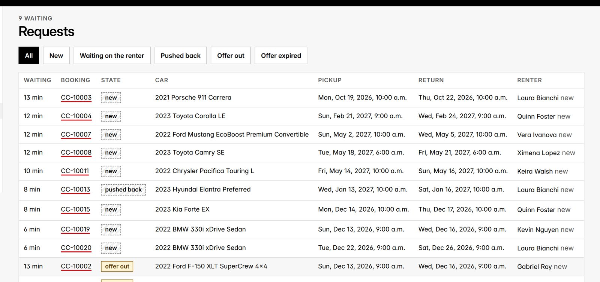
1
My sales
Open My work›My sales. It shows your own sales and commissions only.
1
Commissions comes first. In Sales your rate depends on the rental days of the month: under 50 days 10%, from 50 days 15%, from 100 days 20%. The bar shows your days against the target of 100, and says when your rate rises.
2
The tiles show this week: quotes created, offers sent, rentals added, bookings confirmed, conversion, booked revenue and follow-ups due. Press By month for months, By week for weeks.
3
By week (or By month) lists each period with the same figures, newest first.
4
Follow-ups due lists your open deals with what to do next: send the offer, follow up before the offer expires, or follow up while the renter signs and pays. Red means it is past due.
5
Deals lists every booking you created, added or sent an offer on in the last 180 days, with its status and what it counts. Open a request, an offer or a rental you added from its number.
Figure
How it is counted
Credited to you
A quote you created, a rental you added, or a website request whose first offer you sent. An Admin can give a deal to someone else.
Quotes created, offers sent, rentals added
Counted on the day they happened.
Bookings confirmed, booked revenue
Counted on the day the booking was confirmed.
Conversion
Of the deals credited to you in the period, the share confirmed so far.
Booked revenue
The rental charge before tax, after discounts. A cancelled booking counts only what was kept; refunds come off.
Rental days (Sales)
The days of the completed, paid rentals you sourced that end in the month. The month's tier applies to all of that month's rentals.
Owner leads
1
Owner leads: each enquiry with the name, contact, car and status.
2
Press Take it to make it yours, then call the owner.
3
Press Update to set the status. When you close a lead, say why.
4
Owner applications, last 90 days, shows who applied and how far onboarding has come.
carmacars.ca/va/leads
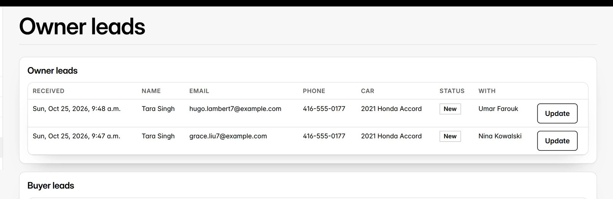
134
06
Chapter 6
Add a rental by hand
Every function adds rentals that come in by phone, at the counter, from Turo, a partner, an insurer or someone you know. The rental is confirmed and on the calendar at once.
Add a rental
Open Bookings›Add a rental. Your home address must be in your profile first: until it is, the page asks for it.
1
Choose the car, the dates and the places. The check shows any clash with another booking or with the cleaning time after a trip. You cannot book over a clash: ask an Admin.
2
Find the renter by name, email or phone, or add a new one with their name, email, phone, date of birth and licence. Add any other drivers.
3
Press Check the calendar and the price. The price comes from the rate sheet. You may add the extras, the coverage and an allowed promo code.
4
A car tagged Listing not finished can be rented too: it stays off the public site. If it has no rates yet, type the rental charge for the whole rental and the reason. An owner's car not yet on the fleet insurance policy is added by an Admin only.
5
To charge another price, type the rental charge and the reason. The rate-sheet price stays on the booking. A price far under the rate sheet is flagged for an Admin to review, but the rental is still added.
6
Choose Where it came from and how it is paid. The ways open to you are set by an Admin, such as Paid another way, Send a payment link or Charge the saved card when the renter signs.
7
Under Who found this client, choose I sourced this client or Entered for CarmaCars.
8
Press Add the rental. The renter gets the confirmation email unless you tick Do not email the renter.
9
A rental you add is credited to you and shows in My sales as a rental you added. If you sourced it, its commission shows there too.
07
Chapter 7
Commissions
Every function earns a commission on the rentals it sources: a renter you found yourself. Say so when you enter the rental, the quote or the offer.
Mark who found the client
Every rental, quote and offer you enter asks: I sourced this client or Entered for CarmaCars.
1
Choose I sourced this client when you found the renter yourself: someone you know, your own post or your own outreach.
2
Choose Entered for CarmaCars when the renter came to CarmaCars: the website, the phone line, a walk-in, a partner.
3
A website request earns nothing by itself. If you sourced it anyway, choose I sourced this client on its offer: an Admin decides.
Commission
Sales
Commission only, with no base pay and no set hours. By the rental days of the month: under 50 days 10%, from 50 days 15%, from 100 days 20%, on all of that month's rentals
Customer service, finance, fleet
10%
How much
The rate on the rental charge before tax, after discounts, less refunds
When earned
When the rental is completed and paid in full. Never on a cancelled, refunded, unpaid or charged-back rental, or on your own or a household rental
Your home address
It must be in your profile. Until it is, a commission waits as not earned yet, and you cannot add a rental or mark I sourced this client
Paid
After an Admin approves it, by transfer or on your pay statement. My sales shows each step: not earned yet, pending approval, approved, paid, reversed
08
Chapter 8
Live visitors and live chat
Customer service and Sales see who is on the site now and answer the live chat. The CarmaCars assistant answers first; you take over whenever you want.
Live visitors
1
Open My work›Live visitors. Each visitor shows a name when known, otherwise "Visitor from Toronto, phone", the page and car they are on, and this visit's pages.
2
Badges are buying signals: "Viewing spree: 6 cars in 10 minutes", "Opened offer CC-1042, not answered", "Left the pay page", "Started a request and stopped" and more.
3
Press Pages for the whole visit. Press Start a chat, write a short friendly message and press Send: the visitor sees it in a bubble.
Follow-ups
Signals of known visitors raise tasks on To do with what to do, for example "Call or message Maya Chen: opened offer CC-1042 twice, no answer for 6 hours". Call or message, then mark the task done. A task closes by itself when the renter answers or pays. Follow-ups done count in My sales.
Renters also get one polite reminder email (and at most one more) when they leave an offer, the pay page or a change unanswered. Taking the follow-up task, a chat with you or a message from you stops these reminders: you are handling it.
Live chat
1
Open My work›Live chat. The menu counts chats waiting for a person. Reply within 5 minutes.
2
Choose a conversation. Beside it: the visitor's page, pages and signals, and the renter's bookings when known.
3
Press Take over (or just write a reply): the assistant stops. Write and press Send or Enter. The visitor sees when you type.
4
Hand back to the assistant when you are done, or Close. A visitor who gave an email gets a copy of the chat.
5
Tick "Email me when a chat waits (while I am on shift)" or desktop alerts if you want them.
09
Chapter 9
Discount game leads
Visitors who are not signed in play a quick game on the site and win a promo code. To get it they give a first name, an email and sometimes a mobile number. Customer service and Sales follow them up.
Game leads
My work›Game leads.
1
Each claim: when, the name (and "on the site now"), email and phone, the prize, the code and whether it is used, marketing consent, and the cars and pages they viewed.
2
Press Call or Email. Help them pick a car and send a request; the code goes in the promo code box (on their own device it is filled in). Then press Contacted.
3
Close with a reason when there is nothing more to do. A booking with the code marks the lead converted by itself.
A visitor who viewed 3 cars or more also raises a Sales task, for example "Claimed 10% off, viewed 6 cars: Maya". It closes when the code goes on a request.
10
Chapter 10
Add-ons
Renters buy add-ons with a rental: seats, flowers, a chauffeur, an umbrella, a phone charger, a full tank. You add them in offers and rentals, confirm the ones that need it, and Fleet keeps the stock.
In an offer or a rental you add
1
On the review screen of a request, under Add-ons, tick or count what the renter wants. The price on the right follows. Choose the hours for a chauffeur.
2
Add-ons the renter asked for are already ticked. One waiting for confirmation (a chauffeur) is confirmed when you keep it and send the offer; untick it to remove it.
3
In Bookings›Add a rental, the Add-ons list sits under The rental: tick them before you press Check the calendar and the price.
4
Notice is yours to judge: you may add flowers with less than 24 hours if Fleet can do it.
After booking
1
The booking page shows the add-ons, paid or not, and any waiting for confirmation.
2
A renter asked for a chauffeur from their portal: you get a task. Press Confirm and charge (the card on file is charged) or Decline.
3
Press Remove and give the reason to take one off. Unpaid, it goes; paid, a refund for it waits for approval.
Fleet: tasks and stock
Flowers and a chauffeur give Fleet a task to get them ready, due before pickup by their notice.
1
Open Cars›Add-ons. Each add-on shows its price, its notice and how many are booked in the next 30 days.
2
For seats, umbrellas and chargers, type how many we have under In stock and press Save. Renters cannot ask for more than are free for their dates.
3
A confirmed booking with more than we have gives you an urgent task: find another or tell the renter.
Add-on revenue is CarmaCars' own. It is never in a commission: your commission stays on the rental charge.
11
Chapter 11
Shared tools
Every function has the calendar and Find a renter. Use them to answer questions fast.
The calendar
1
Every car, its bookings, requests and blocks. The red line is now.
2
Use the arrows, Today and the range to move around, or search by plate, booking or name.
3
Fleet and customer service can remove a cleaning block from its side panel (Remove the block) when a car is ready sooner.
carmacars.ca/va/calendar
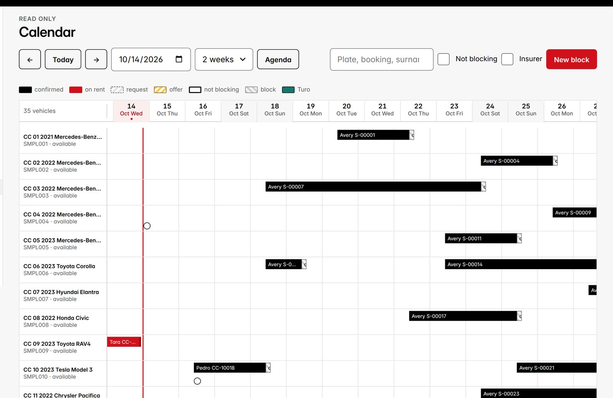
12
Find a renter
1
Search by name, email, phone or booking number.
2
Opening a renter's private details asks for a reason (Open with a reason). It is kept in the access log.
carmacars.ca/va/renters
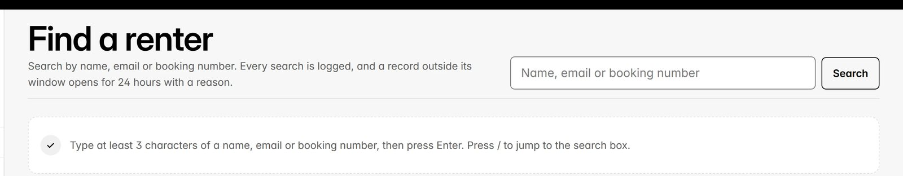
1
Keep this page handy
Quick reference
Sign in
carmacars.ca/sign-in?next=/va
Where things are
To do
Your function's tasks, oldest due first
Today
Pickups, returns, what is due
Working as
Switch function (above the menu)
Customer service
Requests, New quote, Renter messages, Owner forms
Finance
Payments, Tolls and tickets, Reconciliation, Turo trips
Fleet
Field jobs, Daily checks, Photo reviews, Listings, Similar cars
Sales
Requests and offers, New quote, Add a rental, Owner leads
Add a rental, New quote
Every function
My sales
Your commissions, quotes, offers, bookings and booked revenue
My scorecard
Your results by week
Top tasks
Take a taskMy work›To do, Take it, then Done
Send an offerBookings›Requests, the booking, then Send the offer
Quote a callerBookings›New quote, then Create the request
See your salesMy work›My sales, then By week or By month
Claim a client you foundI sourced this client when you add the rental or send the offer
Review Forms C and DOwner forms›Approve
Read a toll noticeTolls and tickets›Read a notice
Issue a refundRequest the refund, Issue the refund
Schedule a field jobField jobs›Schedule
Cover a plateCover the plate, Save the covered photo
If something goes wrong
A link says it expired
Links in our emails work for 24 hours, once. Press Send me a new link on that page.
"Error 1102" on a page
A short limit on our web host. Reload the page. You are still signed in.
"That email and password do not match an account."
Check the address, or use Set a new password on the sign-in page.
A task is above your limit
Press Escalate and say why. An Admin picks it up.
Asked for a 6-digit code
Open your authenticator app. Lost your phone? Tell an Admin.
Talk to us
Emailcontact@carmacars.ca
Phone647-575-3377
Tell us your name, the booking or car, and what you see on the screen.